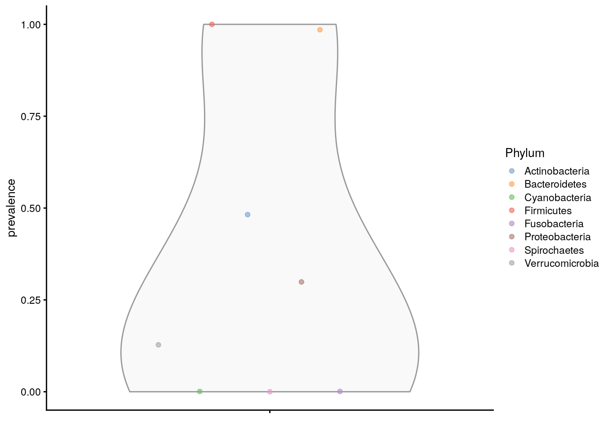

4 Exploration and Quality Control
This chapter focuses on the quality control and exploration of microbiome data and establishes commonly used descriptive summaries. Familiarizing with the peculiarities of a given dataset is essential for data analysis and model building.
The dataset should not suffer from severe technical biases, and you should at least be aware of potential challenges, such as outliers, biases, unexpected patterns and so forth. Standard summaries and visualizations can help, and the rest comes with experience.Moreover, exploration and quality control often entail iterative processes.
4.1 Abundance
Abundance visualization is an important data exploration approach. miaViz integrated the plotAbundanceDensity function to plot the most abundant taxa along with several options.
Next, a few demonstrations are shown, using the (Lahti et al. 2014) dataset. A Jitter plot based on relative abundance data, similar to the one presented at (Salosensaari et al. 2021) supplementary figure 1, can be visualized as follows:
# Load example data
library(miaTime)
library(miaViz)
data(hitchip1006)
tse <- hitchip1006
# Add relative abundances
tse <- transformAssay(tse, MARGIN = "samples",
method = "relabundance")
# Use argument names
# assay.type / assay.type / assay.type
# depending on the mia package version
plotAbundanceDensity(tse, layout = "jitter",
assay.type = "relabundance",
n = 40, point_size=1, point_shape=19,
point_alpha=0.1) +
scale_x_log10(label=scales::percent)The relative abundance values for the top-5 taxonomic features can be visualized as a density plot over a log scaled axis, with “nationality” indicated by colors:
plotAbundanceDensity(tse, layout = "density",
assay.type = "relabundance",
n = 5, colour_by="nationality",
point_alpha=1/10) +
scale_x_log10()4.2 Prevalence
Prevalence quantifies the frequency of samples where certain microbes were detected (above a given detection threshold). The prevalence can be given as sample size (N) or percentage (unit interval).
Investigating prevalence allows you either to focus on changes which pertain to the majority of the samples, or identify rare microbes, which may be conditionally abundant in a small number of samples.
The population prevalence (frequency) at a 1% relative abundance threshold (detection = 1/100 and as_relative = TRUE), can look like this.
head(getPrevalence(tse, detection = 1/100,
sort = TRUE, as_relative = TRUE))
## Faecalibacterium prausnitzii et rel. Ruminococcus obeum et rel.
## 0.9522 0.9140
## Oscillospira guillermondii et rel. Clostridium symbiosum et rel.
## 0.8801 0.8714
## Subdoligranulum variable at rel. Clostridium orbiscindens et rel.
## 0.8358 0.8315The function arguments detection and as_relative can also be used to access, how many samples do pass a threshold for raw counts. Here, the population prevalence (frequency) at the absolute abundance threshold (as_relative = FALSE) at read count 1 (detection = 1) is accessed.
head(getPrevalence(tse, detection = 1, sort = TRUE,
assay.type = "counts",
as_relative = FALSE))
## Uncultured Mollicutes Uncultured Clostridiales II
## 1 1
## Uncultured Clostridiales I Tannerella et rel.
## 1 1
## Sutterella wadsworthia et rel. Subdoligranulum variable at rel.
## 1 1If the output should be used for subsetting or storing the data in the rowData, set sort = FALSE.
4.2.1 Prevalence analysis
To investigate microbiome prevalence at a selected taxonomic level, two approaches are available.
First the data can be agglomerated to the taxonomic level and then getPrevalence can be applied to the resulting object.
# Agglomerate taxa abundances to Phylum level
#and add the new table to the altExp slot
altExp(tse,"Phylum") <- mergeFeaturesByRank(tse, "Phylum")
# Check prevalence for the Phylum abundance table
#from the altExp slot
head(getPrevalence(altExp(tse,"Phylum"), detection = 1/100,
sort = TRUE, assay.type = "counts",
as_relative = TRUE))
## Firmicutes Bacteroidetes Actinobacteria Proteobacteria
## 1.0000000 0.9852302 0.4821894 0.2988705
## Verrucomicrobia Fusobacteria
## 0.1277150 0.0008688Alternatively, the rank argument could be set to perform the agglomeration on the fly.
head(getPrevalence(tse, rank = "Phylum", detection = 1/100,
sort = TRUE, assay.type = "counts",
as_relative = TRUE))
## Firmicutes Bacteroidetes Actinobacteria Proteobacteria
## 1.0000000 0.9852302 0.4821894 0.2988705
## Verrucomicrobia Fusobacteria
## 0.1277150 0.0008688Note that, by default, na.rm = TRUE is used for agglomeration in getPrevalence, whereas the default for mergeFeaturesByRank is FALSE to prevent accidental data loss.
If you only need the names of the prevalent taxa, getPrevalent is available. This returns the taxa that exceed the given prevalence and detection thresholds.
getPrevalent(tse, detection = 0, prevalence = 50/100)
prev <- getPrevalent(tse, detection = 0, prevalence = 50/100,
rank = "Phylum", sort = TRUE)
prevNote that the detection and prevalence thresholds are not the same, since detection can be applied to relative counts or absolute counts depending on whether as_relative is set TRUE or FALSE
The function ‘getPrevalentAbundance’ can be used to check the total relative abundance of the prevalent taxa (between 0 and 1).
4.2.2 Rare taxa
Related functions are available for the analysis of rare taxa (rareMembers; rareAbundance; lowAbundance, getRare, subsetByRare).
4.2.3 Plotting prevalence
To plot the prevalence, add the prevalence of each taxon to rowData. Here, we are analysing the Phylum level abundances, which are stored in the altExp slot.
rowData(altExp(tse,"Phylum"))$prevalence <-
getPrevalence(altExp(tse,"Phylum"), detection = 1/100,
sort = FALSE,
assay.type = "counts", as_relative = TRUE)The prevalences can then be plotted using the plotting functions from the scater package.
library(scater)
plotRowData(altExp(tse,"Phylum"), "prevalence",
colour_by = "Phylum")
The prevalence can also be visualized on the taxonomic tree with the miaViz package.
tse <- agglomerateByRanks(tse)
altExps(tse) <-
lapply(altExps(tse),
function(y){
rowData(y)$prevalence <-
getPrevalence(y, detection = 1/100,
sort = FALSE,
assay.type = "counts",
as_relative = TRUE)
y
})
top_phyla <- getTop(altExp(tse,"Phylum"),
method="prevalence",
top=5L,
assay.type="counts")
top_phyla_mean <- getTop(altExp(tse,"Phylum"),
method="mean",
top=5L,
assay.type="counts")
x <- unsplitByRanks(tse, ranks = taxonomyRanks(tse)[1:6])
x <- addHierarchyTree(x)After some preparation, the data is assembled and can be plotted with plotRowTree.
library(miaViz)
plotRowTree(x[rowData(x)$Phylum %in% top_phyla,],
edge_colour_by = "Phylum",
tip_colour_by = "prevalence",
node_colour_by = "prevalence")plotRowTree(x[rowData(x)$Phylum %in% top_phyla_mean,],
edge_colour_by = "Phylum",
tip_colour_by = "prevalence",
node_colour_by = "prevalence")4.3 Quality control
Next, let us load the GlobalPatterns dataset to illustrate standard microbiome data summaries.
4.3.1 Top taxa
The getTop identifies top taxa in the data.
# Pick the top taxa
top_features <- getTop(tse, method="median", top=10)
# Check the information for these
rowData(tse)[top_features, taxonomyRanks(tse)][1:5, 1:3]
## DataFrame with 5 rows and 3 columns
## Kingdom Phylum Class
## <character> <character> <character>
## 549656 Bacteria Cyanobacteria Chloroplast
## 331820 Bacteria Bacteroidetes Bacteroidia
## 317182 Bacteria Cyanobacteria Chloroplast
## 94166 Bacteria Proteobacteria Gammaproteobacteria
## 279599 Bacteria Cyanobacteria Nostocophycideae4.3.2 Library size / read count
The total counts/sample can be calculated using perCellQCMetrics/addPerCellQC from the scater package. The former one just calculates the values, whereas the latter one directly adds them to colData.
library(scater)
perCellQCMetrics(tse)[1:5,]
## DataFrame with 5 rows and 3 columns
## sum detected total
## <numeric> <numeric> <numeric>
## CL3 864077 6964 864077
## CC1 1135457 7679 1135457
## SV1 697509 5729 697509
## M31Fcsw 1543451 2667 1543451
## M11Fcsw 2076476 2574 2076476
tse <- addPerCellQC(tse)
colData(tse)[1:5,1:3]
## DataFrame with 5 rows and 3 columns
## X.SampleID Primer Final_Barcode
## <factor> <factor> <factor>
## CL3 CL3 ILBC_01 AACGCA
## CC1 CC1 ILBC_02 AACTCG
## SV1 SV1 ILBC_03 AACTGT
## M31Fcsw M31Fcsw ILBC_04 AAGAGA
## M11Fcsw M11Fcsw ILBC_05 AAGCTGThe distribution of calculated library sizes can be visualized as a histogram (left), or by sorting the samples by library size (right).
library(ggplot2)
p1 <- ggplot(colData(tse)) +
geom_histogram(aes(x = sum), color = "black",
fill = "gray", bins = 30) +
labs(x = "Library size", y = "Frequency (n)") +
# scale_x_log10(breaks = scales::trans_breaks("log10", function(x) 10^x),
# labels = scales::trans_format("log10", scales::math_format(10^.x))) +
theme_bw() +
# Removes the grid
theme(panel.grid.major = element_blank(),
panel.grid.minor = element_blank(),
panel.border = element_blank(),
panel.background = element_blank(),
# Adds y-axis
axis.line = element_line(colour = "black"))
library(dplyr)
df <- as.data.frame(colData(tse)) %>%
arrange(sum) %>%
mutate(index = 1:n())
p2 <- ggplot(df, aes(y = index, x = sum/1e6)) +
geom_point() +
labs(x = "Library size (million reads)",
y = "Sample index") +
theme_bw() +
# Removes the grid
theme(panel.grid.major = element_blank(),
panel.grid.minor = element_blank(),
panel.border = element_blank(),
panel.background = element_blank(),
# Adds y-axis
axis.line = element_line(colour = "black"))
library(patchwork)
p1 + p2Library sizes other variables from colData can be visualized by using specified function called plotColData.
# Sort samples by read count,
# order the factor levels,
# and store back to tse as DataFrame
# TODO: plotColData could include an option
# for sorting samples
# based on colData variables
colData(tse) <- as.data.frame(colData(tse)) %>%
arrange(X.SampleID) %>%
mutate(X.SampleID = factor(X.SampleID,
levels=X.SampleID)) %>%
DataFrame
plotColData(tse,"sum","X.SampleID", colour_by = "SampleType") +
theme(axis.text.x = element_text(angle = 45, hjust=1)) +
labs(y = "Library size (N)", x = "Sample ID") plotColData(tse,"sum","SampleType", colour_by = "SampleType") +
theme(axis.text.x = element_text(angle = 45, hjust=1))In addition, data can be rarefied with rarefyAssay, which normalises the samples to an equal number of reads. This remains controversial, however, and strategies to mitigate the information loss in rarefaction have been proposed (Schloss 2024a) (Schloss 2024b). Moreover, this practice has been discouraged for the analysis of differentially abundant microorganisms (see (McMurdie and Holmes 2014)).
4.3.3 Contaminant sequences
Samples might be contaminated with exogenous sequences. The impact of each contaminant can be estimated based on their frequencies and concentrations across the samples.
The following decontam functions are based on the (Davis et al. 2018) and support such functionality:
-
isContaminant,isNotContaminant
-
addContaminantQC,addNotContaminantQC